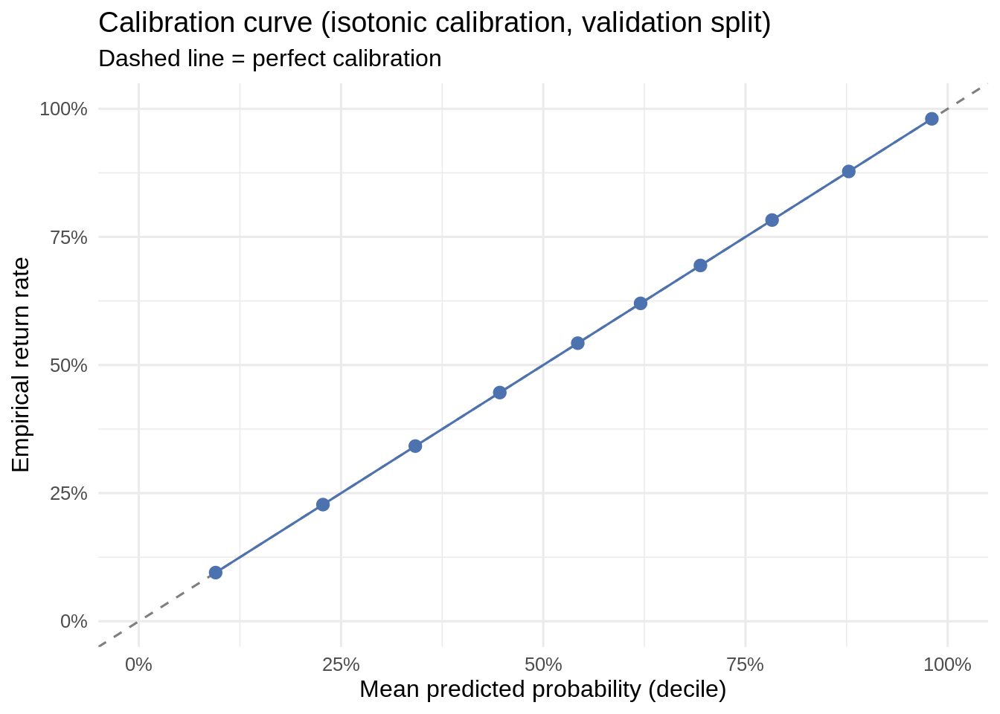
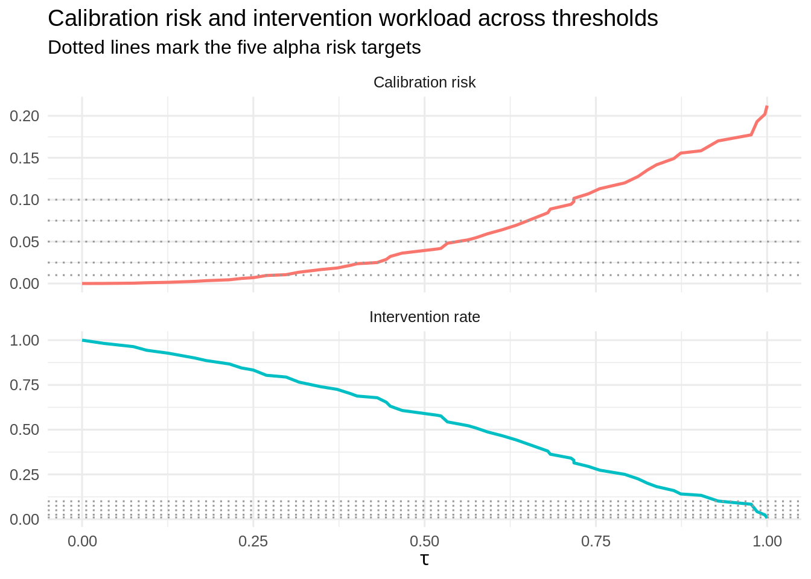
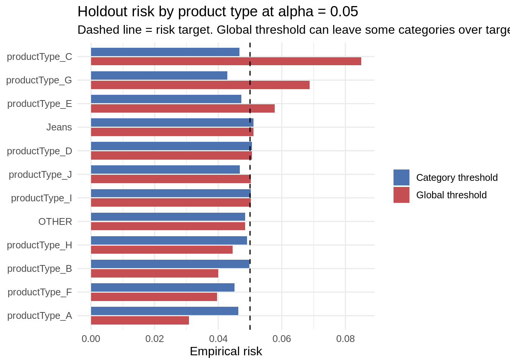

Code
source(file.path("R", "00_setup.R"))00_setup.R loaded: paths, IO helpers, and metrics are ready.Category-Aware and Future-Period Drift-Audited Conformal Risk Control for Value-Sensitive E-Commerce Returns
This notebook is Stage 3 of the CostConformal-Return pipeline. Missing-value imputation, categorical encoding, and normalization are no longer fit here — they were moved to their own notebook, Stage 1.5 (01b_preprocessing.qmd), so preprocessing is auditable as its own pipeline step rather than hidden inside modeling code. This notebook picks up from there and finishes the work the project report flags as incomplete: the calibration comparison, the CRC target-results table, the category-aware extension, the subgroup/intervention-burden audit, and the future-period drift audit, in the priority order from Section 11 of the report:
It reads the preprocessed splits and the fitted preprocessor written by Stage 1.5, and writes model objects to models/, tables to outputs/tables/, and figures to outputs/figures/.
03_calibration_crc_visualizations.qmd in the project root.data/processed/*_prep.csv.gz (the five files Stage 1.5 writes) and models/r_preprocessor.rds must already exist.Ctrl/Cmd+Shift+K, or run chunk-by-chunk — this stage fits a model and does several full-data passes, so the first render will take noticeably longer than Stages 1–2.source(file.path("R", "00_setup.R"))00_setup.R loaded: paths, IO helpers, and metrics are ready.preprocessed_files <- c(
model_train = file.path(PROCESSED_DIR, "model_train_prep.csv.gz"),
validation = file.path(PROCESSED_DIR, "validation_prep.csv.gz"),
crc_calibration = file.path(PROCESSED_DIR, "crc_calibration_prep.csv.gz"),
iid_holdout = file.path(PROCESSED_DIR, "iid_holdout_prep.csv.gz"),
future_test = file.path(PROCESSED_DIR, "official_future_test_prep.csv.gz")
)
preprocessor_file <- file.path(MODEL_DIR, "r_preprocessor.rds")
assert_files_exist(c(preprocessed_files, preprocessor = preprocessor_file))
preprocessor <- readRDS(preprocessor_file)
model_train_prep <- fread(preprocessed_files[["model_train"]])
validation_prep <- fread(preprocessed_files[["validation"]])
crc_calibration_prep <- fread(preprocessed_files[["crc_calibration"]])
iid_holdout_prep <- fread(preprocessed_files[["iid_holdout"]])
future_test_prep <- fread(preprocessed_files[["future_test"]])
cat(
"model_train:", nrow(model_train_prep),
"| validation:", nrow(validation_prep),
"| crc_calibration:", nrow(crc_calibration_prep),
"| iid_holdout:", nrow(iid_holdout_prep),
"| future_test:", nrow(future_test_prep), "\n"
)model_train: 890146 | validation: 205432 | crc_calibration: 136892 | iid_holdout: 136663 | future_test: 1460366 fwrite()/fread() round-tripping doesn’t preserve R’s factor type — the categorical columns come back as plain character vectors. Their values are already correctly encoded (rare/unseen levels collapsed to "OTHER" by Stage 1.5), but we still restore them to factors with the exact training-time level set here, so glm()’s reference-level contrasts are built identically across every split.
NUMERIC_FEATURES <- names(preprocessor$medians)
CATEGORICAL_FEATURES <- names(preprocessor$allowed_levels)
restore_factor_types <- function(dt, preproc) {
dt <- copy(dt)
for (col in names(preproc$allowed_levels)) {
if (col %in% names(dt)) {
levs <- union(preproc$allowed_levels[[col]], "OTHER")
set(dt, j = col, value = factor(dt[[col]], levels = levs))
}
}
dt
}
model_train_prep <- restore_factor_types(model_train_prep, preprocessor)
validation_prep <- restore_factor_types(validation_prep, preprocessor)
crc_calibration_prep <- restore_factor_types(crc_calibration_prep, preprocessor)
iid_holdout_prep <- restore_factor_types(iid_holdout_prep, preprocessor)
future_test_prep <- restore_factor_types(future_test_prep, preprocessor)brandDesc is excluded from the baseline logistic regression despite being in the feature dictionary: it has thousands of distinct values, and a one-hot-encoded high-cardinality factor is a poor fit for a linear baseline (it either fails to fit cleanly or overfits on rare brands). It’s kept in the preprocessed data as an audit column and is the natural first upgrade when the report’s “optional stronger baseline” (LightGBM/XGBoost, which handles high-cardinality categoricals natively) is implemented — the CRC/policy code downstream only consumes a calibrated probability column, so swapping the model is a drop-in change.
Stage 1.5 is supposed to guarantee zero NA in every predictor this model uses. This gate checks that guarantee directly, on the actual objects this notebook is about to fit and predict on, rather than trusting that Stage 1.5’s own gate ran correctly. If this fires, the fix belongs in Stage 1.5 (01b_preprocessing.qmd), not here — re-run that notebook and then re-run this one from the top; do not patch around a specific NA count downstream (e.g. by dropping the affected rows), since that would silently change which rows the model is fit and evaluated on.
BINARY_FEATURES <- c("isMale", "premier")
# Missing/unseen categorical values are already represented
# by the "OTHER" factor level in Stage 1.5.
# Do NOT add customer_missing/product_missing to the model.
MISSINGNESS_FLAGS <- character(0)
MODEL_PREDICTORS <- c(
setdiff(NUMERIC_FEATURES, "type_median_price"),
CATEGORICAL_FEATURES,
"isMale",
"premier"
)
all_prep_splits <- list(
model_train = model_train_prep,
validation = validation_prep,
crc_calibration = crc_calibration_prep,
iid_holdout = iid_holdout_prep,
future_test = future_test_prep
)
predictor_na_check <- rbindlist(
lapply(names(all_prep_splits), function(nm) {
dt <- all_prep_splits[[nm]]
present <- intersect(
MODEL_PREDICTORS,
names(dt)
)
missing_cols <- setdiff(
MODEL_PREDICTORS,
names(dt)
)
if (length(missing_cols) > 0) {
stop(paste0(
nm,
" is missing predictor column(s) required by the Stage 3 model formula: ",
paste(missing_cols, collapse = ", "),
". Check that Stage 1.5 was re-run with the current predictor contract."
))
}
data.table(
split = nm,
feature = present,
n_na = sapply(
present,
function(col) sum(is.na(dt[[col]]))
)
)
})
)
bad_predictors <- predictor_na_check[n_na > 0]
if (nrow(bad_predictors) > 0) {
print(bad_predictors)
stop(
"Stage 3 stopped: one or more model predictors still contain NA after Stage 1.5. ",
"Re-run 01b_preprocessing.qmd before re-running this notebook."
)
}
cat(
"PASS: all",
length(MODEL_PREDICTORS),
"model predictors are NA-free in every split.\n"
)PASS: all 21 model predictors are NA-free in every split.Fit on a reproducible sample of up to 250,000 model_train events, stratified by isReturned so the ~55% return rate is preserved. This keeps glm() fast without sacrificing much statistical power at this sample size.
MAX_TRAIN_N <- 250000
set.seed(20260731)
stratified_sample <- function(dt, max_n) {
if (nrow(dt) <= max_n) return(copy(dt))
frac <- max_n / nrow(dt)
dt[
,
.SD[
sample(
.N,
size = max(1, round(.N * frac))
)
],
by = isReturned
]
}
train_sample <- stratified_sample(
model_train_prep,
MAX_TRAIN_N
)
cat(
"Baseline model fit on",
nrow(train_sample),
"sampled rows.\n"
)Baseline model fit on 250000 sampled rows.# Stage 1.5 already represents missing/unseen
# categorical values using the explicit "OTHER" category.
#
# Missingness flags are therefore not included separately.
BINARY_FEATURES <- c("isMale", "premier")
MISSINGNESS_FLAGS <- character(0)
# type_median_price is derived directly from productType.
# Including both creates an exact linear dependency in
# the current design matrix, so exclude type_median_price
# from this GLM while retaining it in the preprocessed data.
MODEL_PREDICTORS <- c(
setdiff(NUMERIC_FEATURES, "type_median_price"),
CATEGORICAL_FEATURES,
BINARY_FEATURES
)
model_formula <- as.formula(
paste(
"isReturned ~",
paste(MODEL_PREDICTORS, collapse = " + ")
)
)
cat("Baseline GLM formula:\n")Baseline GLM formula:print(model_formula)isReturned ~ age + salesPerCustomer + returnsPerCustomer + customerReturnRate +
log_sales_customer + log_returns_customer + avgGbpPrice +
avgDiscountValue + salesPerProduct + returnsPerProduct +
productReturnRate + log_sales_product + log_returns_product +
discount_ratio + price_to_type_median + value_exposure +
age_band + shippingCountry + productType + isMale + premiertrain_sample <- copy(train_sample)
baseline_model <- glm(
formula = model_formula,
data = train_sample,
family = binomial()
)
cat("\nBaseline GLM fitted.\n")
Baseline GLM fitted.cat(
"Number of coefficients:",
length(coef(baseline_model)),
"\n"
)Number of coefficients: 45 summary(baseline_model)
Call:
glm(formula = model_formula, family = binomial(), data = train_sample)
Coefficients:
Estimate Std. Error z value Pr(>|z|)
(Intercept) -1.984e+00 1.325e-01 -14.978 < 2e-16 ***
age -1.011e-03 2.006e-03 -0.504 0.614080
salesPerCustomer -5.899e-04 5.633e-04 -1.047 0.294991
returnsPerCustomer 3.738e-03 1.121e-03 3.335 0.000852 ***
customerReturnRate 5.403e+00 6.762e-02 79.903 < 2e-16 ***
log_sales_customer 1.617e-01 3.252e-02 4.973 6.59e-07 ***
log_returns_customer -2.404e-01 3.630e-02 -6.622 3.53e-11 ***
avgGbpPrice -9.785e-04 1.435e-03 -0.682 0.495454
avgDiscountValue 2.777e-02 4.190e-03 6.627 3.44e-11 ***
salesPerProduct -5.261e-04 6.728e-05 -7.819 5.34e-15 ***
returnsPerProduct 1.315e-03 2.303e-04 5.711 1.12e-08 ***
productReturnRate 1.805e-01 9.009e-02 2.004 0.045110 *
log_sales_product -7.567e-01 2.716e-02 -27.854 < 2e-16 ***
log_returns_product 7.685e-01 2.804e-02 27.407 < 2e-16 ***
discount_ratio -4.258e-01 1.384e-01 -3.076 0.002100 **
price_to_type_median 2.766e-02 3.056e-02 0.905 0.365351
value_exposure -1.016e-02 1.053e-01 -0.096 0.923144
age_band16-24 2.341e-02 1.864e-02 1.256 0.209263
age_band35-44 2.556e-02 2.457e-02 1.040 0.298150
age_bandUNKNOWN 6.715e-02 4.056e-02 1.656 0.097819 .
age_band45-54 3.593e-02 4.654e-02 0.772 0.440132
age_band55-64 9.399e-02 6.972e-02 1.348 0.177621
age_band65+ 3.577e-02 1.338e-01 0.267 0.789119
shippingCountryCountry_H -3.030e-02 1.917e-02 -1.580 0.114017
shippingCountryCountry_E -6.829e-02 1.330e-02 -5.135 2.82e-07 ***
shippingCountryCountry_C -4.694e-02 4.760e-02 -0.986 0.324099
shippingCountryCountry_D -2.557e-02 2.531e-02 -1.010 0.312409
shippingCountryCountry_I -6.280e-02 2.898e-02 -2.167 0.030239 *
shippingCountryCountry_B -7.629e-02 4.506e-02 -1.693 0.090464 .
shippingCountryCountry_F -1.168e-01 3.735e-02 -3.126 0.001771 **
shippingCountryCountry_A 7.675e-02 3.669e-02 2.092 0.036430 *
shippingCountryOTHER 4.600e-01 4.462e-02 10.310 < 2e-16 ***
productTypeproductType_E -8.256e-02 3.762e-02 -2.195 0.028184 *
productTypeproductType_F 4.457e-03 4.792e-02 0.093 0.925893
productTypeproductType_H -1.315e-01 3.696e-02 -3.558 0.000374 ***
productTypeJeans 1.638e-02 2.667e-02 0.614 0.539026
productTypeproductType_J -1.334e-01 2.651e-02 -5.033 4.83e-07 ***
productTypeproductType_I 4.421e-02 3.366e-02 1.313 0.189026
productTypeproductType_C 1.022e-01 4.935e-02 2.071 0.038361 *
productTypeproductType_D -1.897e-01 3.949e-02 -4.804 1.56e-06 ***
productTypeproductType_G -1.906e-01 4.242e-02 -4.493 7.04e-06 ***
productTypeproductType_A -1.749e-01 5.025e-02 -3.480 0.000501 ***
productTypeOTHER -1.007e-01 2.324e-02 -4.332 1.48e-05 ***
isMale 1.791e-01 1.370e-02 13.067 < 2e-16 ***
premier 4.513e-03 1.926e-02 0.234 0.814717
---
Signif. codes: 0 '***' 0.001 '**' 0.01 '*' 0.05 '.' 0.1 ' ' 1
(Dispersion parameter for binomial family taken to be 1)
Null deviance: 343761 on 249999 degrees of freedom
Residual deviance: 256174 on 249955 degrees of freedom
AIC: 256264
Number of Fisher Scoring iterations: 5# ------------------------------------------------------------
# Design-matrix rank diagnostic
# ------------------------------------------------------------
X <- model.matrix(
model_formula,
data = train_sample
)
cat("\nDesign matrix dimensions:\n")
Design matrix dimensions:cat("Rows:", nrow(X), "\n")Rows: 250000 cat("Columns:", ncol(X), "\n")Columns: 46 cat("\nColumns involving OTHER:\n")
Columns involving OTHER:print(grep(
"OTHER",
colnames(X),
value = TRUE
))[1] "age_bandOTHER" "shippingCountryOTHER" "productTypeOTHER" cat("\nRank diagnostic:\n")
Rank diagnostic:cat("Matrix rank:", qr(X)$rank, "\n")Matrix rank: 45 cat("Number of columns:", ncol(X), "\n")Number of columns: 46 if (qr(X)$rank < ncol(X)) {
cat("\nWARNING: design matrix is still rank deficient.\n")
cat("\nAlias diagnostic:\n")
print(alias(baseline_model))
} else {
cat("\nPASS: design matrix is full rank.\n")
}
WARNING: design matrix is still rank deficient.
Alias diagnostic:
Model :
isReturned ~ age + salesPerCustomer + returnsPerCustomer + customerReturnRate +
log_sales_customer + log_returns_customer + avgGbpPrice +
avgDiscountValue + salesPerProduct + returnsPerProduct +
productReturnRate + log_sales_product + log_returns_product +
discount_ratio + price_to_type_median + value_exposure +
age_band + shippingCountry + productType + isMale + premierX <- model.matrix(
model_formula,
data = train_sample
)
cat("\nDesign matrix dimensions:\n")
Design matrix dimensions:cat("Rows:", nrow(X), "\n")Rows: 250000 cat("Columns:", ncol(X), "\n")Columns: 46 cat("\nColumns involving OTHER:\n")
Columns involving OTHER:print(grep(
"OTHER",
colnames(X),
value = TRUE
))[1] "age_bandOTHER" "shippingCountryOTHER" "productTypeOTHER" cat("\nRank diagnostic:\n")
Rank diagnostic:cat("Matrix rank:", qr(X)$rank, "\n")Matrix rank: 45 cat("Number of columns:", ncol(X), "\n")Number of columns: 46 if (qr(X)$rank < ncol(X)) {
cat("\nWARNING: design matrix is still rank deficient.\n")
cat("\nAlias diagnostic:\n")
print(alias(baseline_model))
} else {
cat("\nPASS: design matrix is full rank.\n")
}
WARNING: design matrix is still rank deficient.
Alias diagnostic:
Model :
isReturned ~ age + salesPerCustomer + returnsPerCustomer + customerReturnRate +
log_sales_customer + log_returns_customer + avgGbpPrice +
avgDiscountValue + salesPerProduct + returnsPerProduct +
productReturnRate + log_sales_product + log_returns_product +
discount_ratio + price_to_type_median + value_exposure +
age_band + shippingCountry + productType + isMale + premierA glm() with an aliased (rank-deficient) design matrix reports NA for the affected coefficient(s) rather than erroring — so an invalid model can look like a successful fit and get saved, scored, and only fail loudly several steps later when isoreg() chokes on the resulting NA probabilities. This gate catches that here, at the source, with the diagnostics needed to fix it (alias() identifies exactly which terms are structurally redundant, e.g. a missingness-flag perfectly determined by another predictor once that predictor’s own missing values are consistently coded).
coef_values <- coef(baseline_model)
bad_terms <- names(coef_values)[!is.finite(coef_values)]
if (length(bad_terms) > 0) {
cat(
"Non-finite coefficient(s) found for:",
paste(bad_terms, collapse = ", "),
"\n\n"
)
cat(
"alias() diagnostic (identifies which terms are structurally redundant):\n"
)
print(alias(baseline_model))
stop(
"Stage 3 stopped: baseline GLM has non-finite (aliased) coefficient(s): ",
paste(bad_terms, collapse = ", "),
". Inspect the alias() output above and the model_formula predictor set ",
"before proceeding -- do not silently drop the affected rows or terms."
)
}
cat(
"PASS: all",
length(coef_values),
"baseline GLM coefficients are finite.\n"
)PASS: all 45 baseline GLM coefficients are finite.saveRDS(
baseline_model,
file.path(MODEL_DIR, "r_logistic_baseline.rds")
)score_dt <- function(dt, model) {
dt <- copy(dt)
dt[, raw_prob := predict(model, newdata = dt, type = "response")]
dt
}
validation_scored <- score_dt(validation_prep, baseline_model)
# Prediction-validity gate: with a coefficient-finite model and NA-free
# predictors (both already checked above), raw_prob should be finite for
# every row. Checking this explicitly, right here, turns any regression into
# an immediate, specific stop() instead of a confusing downstream isoreg()
# crash ("missing values not allowed").
if (any(!is.finite(validation_scored$raw_prob))) {
n_bad <- sum(!is.finite(validation_scored$raw_prob))
stop(paste0(
"Stage 3 stopped: baseline model produced ", n_bad,
" non-finite (NA/NaN/Inf) validation probabilities out of ", nrow(validation_scored),
" rows. Calibration cannot proceed. This should not happen if the ",
"predictor-completeness and model-validity gates above both passed -- ",
"re-check those before investigating further."
))
}
cat("PASS: all", nrow(validation_scored), "validation predictions are finite.\n")PASS: all 205432 validation predictions are finite.val_auc <- auc_roc(validation_scored$isReturned, validation_scored$raw_prob)
val_prauc <- pr_auc(validation_scored$isReturned, validation_scored$raw_prob)
val_brier_raw <- brier_score(validation_scored$isReturned, validation_scored$raw_prob)
val_logloss_raw <- log_loss(validation_scored$isReturned, validation_scored$raw_prob)
cat(
"Validation (raw, uncalibrated) — AUC:", round(val_auc, 4),
"| PR-AUC:", round(val_prauc, 4),
"| Brier:", round(val_brier_raw, 4),
"| log-loss:", round(val_logloss_raw, 4), "\n"
)Validation (raw, uncalibrated) — AUC: 0.8198 | PR-AUC: 0.8527 | Brier: 0.1722 | log-loss: 0.513 # Platt scaling: logistic regression of the true label on the logit of the
# raw predicted probability.
platt_model <- glm(
isReturned ~ qlogis(pmin(pmax(raw_prob, 1e-6), 1 - 1e-6)),
data = validation_scored,
family = binomial()
)
platt_predict <- function(raw_prob) {
eps <- 1e-6
predict(
platt_model,
newdata = data.table(raw_prob = pmin(pmax(raw_prob, eps), 1 - eps)),
type = "response"
)
}
# Isotonic regression: monotone step-function fit of true label on raw
# predicted probability, extended as a step function for prediction on new data.
iso_fit <- isoreg(x = validation_scored$raw_prob, y = validation_scored$isReturned)
iso_step <- as.stepfun(iso_fit)
isotonic_predict <- function(raw_prob) {
pmin(pmax(iso_step(raw_prob), 0), 1)
}
calibration_candidates <- list(
raw = function(p) p,
platt = platt_predict,
isotonic = isotonic_predict
)
calibration_comparison <- rbindlist(lapply(names(calibration_candidates), function(nm) {
cal_prob <- calibration_candidates[[nm]](validation_scored$raw_prob)
data.table(
method = nm,
brier = brier_score(validation_scored$isReturned, cal_prob),
log_loss = log_loss(validation_scored$isReturned, cal_prob)
)
}))
setorder(calibration_comparison, brier)
fwrite(calibration_comparison, file.path(TABLE_DIR, "model_01_calibration_comparison.csv"))
calibration_comparison| method | brier | log_loss |
|---|---|---|
| isotonic | 0.1715068 | 0.5093736 |
| platt | 0.1722094 | 0.5130283 |
| raw | 0.1722180 | 0.5130339 |
best_method <- calibration_comparison$method[1]
cat("Selected calibration method (lowest validation Brier score):", best_method, "\n")Selected calibration method (lowest validation Brier score): isotonic # Note for the report: this selects whichever method minimizes Brier score
# on the validation split -- a project-specific selection rule, not a
# universal claim that this method is "objectively best." The validation
# split is used here to both choose and evaluate the calibrator, so
# `calibration_comparison` should be described as validation-based
# calibrator selection/comparison, not as an independent, untouched
# generalization estimate.
calibrate_prob <- calibration_candidates[[best_method]]
saveRDS(
list(method = best_method, platt_model = platt_model, iso_step = iso_step),
file.path(MODEL_DIR, "r_calibrator.rds")
)validation_scored[, calibrated_prob := calibrate_prob(raw_prob)]
# unique() guards against duplicate breakpoints, which cut() otherwise
# rejects with "'breaks' are not unique" -- a real risk here since isotonic
# regression's calibrated_prob is a step function with many repeated values,
# so several of the 11 quantile cut points can coincide.
cal_breaks <- unique(quantile(
validation_scored$calibrated_prob, probs = seq(0, 1, 0.1),
names = FALSE, na.rm = TRUE
))
if (length(cal_breaks) < 2) {
stop("Calibration curve cannot be constructed: calibrated_prob has insufficient variation to form even two bins.")
}
validation_scored[, cal_decile := cut(
calibrated_prob,
breaks = cal_breaks,
include.lowest = TRUE,
labels = FALSE
)]
cal_curve <- validation_scored[, .(
n = .N,
mean_predicted = mean(calibrated_prob),
empirical_rate = mean(isReturned)
), by = cal_decile][order(cal_decile)]
fwrite(cal_curve, file.path(TABLE_DIR, "model_02_calibration_curve.csv"))
p_calib <- ggplot(cal_curve, aes(x = mean_predicted, y = empirical_rate)) +
geom_abline(slope = 1, intercept = 0, linetype = "dashed", color = "grey50") +
geom_point(size = 2.5, color = "#4C72B0") +
geom_line(color = "#4C72B0") +
scale_x_continuous(labels = percent, limits = c(0, 1)) +
scale_y_continuous(labels = percent, limits = c(0, 1)) +
labs(
title = paste0("Calibration curve (", best_method, " calibration, validation split)"),
subtitle = "Dashed line = perfect calibration",
x = "Mean predicted probability (decile)", y = "Empirical return rate"
) +
theme_minimal(base_size = 12)
p_calib
save_plot(p_calib, "07_calibration_curve.png")crc_calibration_scored <- score_dt(crc_calibration_prep, baseline_model)
crc_calibration_scored[, calibrated_prob := calibrate_prob(raw_prob)]
iid_holdout_scored <- score_dt(iid_holdout_prep, baseline_model)
iid_holdout_scored[, calibrated_prob := calibrate_prob(raw_prob)]
future_test_scored <- score_dt(future_test_prep, baseline_model)
future_test_scored[, calibrated_prob := calibrate_prob(raw_prob)]Bounded, monotone policy loss for threshold \(\tau\): \[L_i(\tau) = y_i \cdot v_i \cdot \mathbb{1}[\hat p_i < \tau]\] This is non-decreasing in \(\tau\) (raising the intervention bar means fewer items get intervened on, so more returned items’ value is missed). CRC selects the largest \(\tau\) — the least-intervention policy — for which the finite-sample-corrected empirical risk still stays under the target \(\alpha\): \[\frac{n}{n+1}\widehat R(\tau) + \frac{1}{n+1} < \alpha\]
crc_select_threshold <- function(y, v, phat, alpha, n_grid = 200) {
ok <- !is.na(y) & !is.na(v) & !is.na(phat)
y <- y[ok]; v <- v[ok]; phat <- phat[ok]
n <- length(y)
if (n == 0) stop("No valid (y, v, phat) rows to select a threshold from.")
taus <- sort(unique(c(0, quantile(phat, probs = seq(0, 1, length.out = n_grid), names = FALSE), 1)))
risks <- sapply(taus, function(tau) mean(y * v * (phat < tau)))
corrected <- (n / (n + 1)) * risks + 1 / (n + 1)
feasible_idx <- which(corrected < alpha)
if (length(feasible_idx) == 0) {
warning("No threshold satisfies alpha = ", alpha, "; falling back to tau = 0 (maximal intervention).")
return(list(tau = 0, risk = risks[1], corrected_risk = corrected[1], n = n))
}
best_idx <- feasible_idx[which.max(taus[feasible_idx])]
list(tau = taus[best_idx], risk = risks[best_idx], corrected_risk = corrected[best_idx], n = n)
}
evaluate_threshold <- function(y, v, phat, tau) {
ok <- !is.na(y) & !is.na(v) & !is.na(phat)
y <- y[ok]; v <- v[ok]; phat <- phat[ok]
list(
risk = mean(y * v * (phat < tau)),
intervention_rate = mean(phat >= tau),
n = length(y)
)
}ALPHA_GRID <- c(0.01, 0.025, 0.05, 0.075, 0.10)
crc_target_results <- rbindlist(lapply(ALPHA_GRID, function(alpha) {
sel <- crc_select_threshold(
crc_calibration_scored$isReturned,
crc_calibration_scored$value_exposure,
crc_calibration_scored$calibrated_prob,
alpha
)
holdout_eval <- evaluate_threshold(
iid_holdout_scored$isReturned, iid_holdout_scored$value_exposure,
iid_holdout_scored$calibrated_prob, sel$tau
)
future_eval <- evaluate_threshold(
future_test_scored$isReturned, future_test_scored$value_exposure,
future_test_scored$calibrated_prob, sel$tau
)
calib_eval <- evaluate_threshold(
crc_calibration_scored$isReturned, crc_calibration_scored$value_exposure,
crc_calibration_scored$calibrated_prob, sel$tau
)
data.table(
alpha = alpha,
tau = sel$tau,
calibration_risk = calib_eval$risk,
calibration_corrected_risk = sel$corrected_risk,
calibration_intervention_rate = calib_eval$intervention_rate,
iid_holdout_risk = holdout_eval$risk,
iid_holdout_intervention_rate = holdout_eval$intervention_rate,
future_test_risk = future_eval$risk,
future_test_intervention_rate = future_eval$intervention_rate,
risk_target_met_on_holdout = holdout_eval$risk < alpha,
risk_target_met_on_future_test = future_eval$risk < alpha
)
}))
fwrite(crc_target_results, file.path(TABLE_DIR, "model_04_crc_target_results.csv"))
crc_target_results| alpha | tau | calibration_risk | calibration_corrected_risk | calibration_intervention_rate | iid_holdout_risk | iid_holdout_intervention_rate | future_test_risk | future_test_intervention_rate | risk_target_met_on_holdout | risk_target_met_on_future_test |
|---|---|---|---|---|---|---|---|---|---|---|
| 0.010 | 0.2690265 | 0.0095571 | 0.0095643 | 0.8037650 | 0.0093923 | 0.8042118 | 0.0097948 | 0.7915625 | TRUE | TRUE |
| 0.025 | 0.4013015 | 0.0235933 | 0.0236004 | 0.6879803 | 0.0234319 | 0.6875672 | 0.0240208 | 0.6765058 | TRUE | TRUE |
| 0.050 | 0.5496565 | 0.0489946 | 0.0490015 | 0.5380665 | 0.0489076 | 0.5374388 | 0.0502880 | 0.5271103 | TRUE | FALSE |
| 0.075 | 0.6340734 | 0.0696058 | 0.0696126 | 0.4423560 | 0.0692340 | 0.4412899 | 0.0710861 | 0.4325354 | TRUE | TRUE |
| 0.100 | 0.7177446 | 0.0975800 | 0.0975866 | 0.3294349 | 0.0973063 | 0.3269502 | 0.0995531 | 0.3209832 | TRUE | TRUE |
Scope of the guarantee. The split-CRC guarantee formally applies to the exchangeable calibration/IID-holdout setting — the risk_target_met_on_holdout column is the formal check. risk_target_met_on_future_test is reported as a robustness check, not a restatement of the formal guarantee: the released data provides no timestamps to certify exchangeability across the Sep–Oct → Oct–Nov boundary, so a violation there motivates the drift audit below rather than invalidating the method.
tau_grid <- quantile(crc_calibration_scored$calibrated_prob, probs = seq(0, 1, 0.02), names = FALSE)
threshold_curve <- rbindlist(lapply(tau_grid, function(tau) {
ev <- evaluate_threshold(
crc_calibration_scored$isReturned, crc_calibration_scored$value_exposure,
crc_calibration_scored$calibrated_prob, tau
)
data.table(tau = tau, risk = ev$risk, intervention_rate = ev$intervention_rate)
}))
threshold_long <- melt(
threshold_curve, id.vars = "tau",
measure.vars = c("risk", "intervention_rate"),
variable.name = "metric", value.name = "value"
)
threshold_long[, metric := fifelse(metric == "risk", "Calibration risk", "Intervention rate")]
p_threshold <- ggplot(threshold_long, aes(x = tau, y = value, color = metric)) +
geom_line(linewidth = 0.9) +
geom_hline(
data = data.table(alpha = ALPHA_GRID),
aes(yintercept = alpha), inherit.aes = FALSE,
linetype = "dotted", color = "grey60"
) +
facet_wrap(~metric, scales = "free_y", ncol = 1) +
labs(
title = "Calibration risk and intervention workload across thresholds",
subtitle = "Dotted lines mark the five alpha risk targets",
x = expression(tau), y = NULL, color = NULL
) +
theme_minimal(base_size = 12) +
theme(legend.position = "none")
p_threshold
save_plot(p_threshold, "06_value_exposure_and_intervention_by_threshold.png", height = 7)Restricted to \(\alpha = 0.05\) as the representative target for this audit (the code is written to accept any alpha, so this loop can be re-run at any of the five targets by changing the argument). Categories with fewer than MIN_CATEGORY_SUPPORT calibration rows fall back to the global threshold rather than fitting an unstable category-specific one.
CATEGORY_ALPHA <- 0.05
MIN_CATEGORY_SUPPORT <- 500
global_sel <- crc_select_threshold(
crc_calibration_scored$isReturned,
crc_calibration_scored$value_exposure,
crc_calibration_scored$calibrated_prob,
CATEGORY_ALPHA
)
category_levels <- unique(as.character(
crc_calibration_scored[!is.na(productType), productType]
))
category_thresholds <- rbindlist(lapply(category_levels, function(cat) {
sub <- crc_calibration_scored[productType == cat & !is.na(value_exposure)]
n_sub <- nrow(sub)
if (n_sub < MIN_CATEGORY_SUPPORT) {
return(data.table(
productType = cat, n_calibration = n_sub,
tau = global_sel$tau, used_global_fallback = TRUE
))
}
sel <- crc_select_threshold(sub$isReturned, sub$value_exposure, sub$calibrated_prob, CATEGORY_ALPHA)
data.table(productType = cat, n_calibration = n_sub, tau = sel$tau, used_global_fallback = FALSE)
}))
# Worst-category-risk comparison: apply the GLOBAL threshold vs. each
# CATEGORY-SPECIFIC threshold on the (unseen) IID holdout split.
worst_category_risk <- rbindlist(lapply(category_levels, function(cat) {
sub <- iid_holdout_scored[productType == cat & !is.na(value_exposure)]
if (nrow(sub) == 0) return(NULL)
cat_tau <- category_thresholds[productType == cat, tau]
global_eval <- evaluate_threshold(sub$isReturned, sub$value_exposure, sub$calibrated_prob, global_sel$tau)
category_eval <- evaluate_threshold(sub$isReturned, sub$value_exposure, sub$calibrated_prob, cat_tau)
data.table(
productType = cat,
n_holdout = nrow(sub),
risk_with_global_threshold = global_eval$risk,
risk_with_category_threshold = category_eval$risk,
risk_exceeds_alpha_with_global = global_eval$risk >= CATEGORY_ALPHA
)
}))
setorder(worst_category_risk, -risk_with_global_threshold)
fwrite(category_thresholds, file.path(TABLE_DIR, "model_05_category_thresholds.csv"))
fwrite(worst_category_risk, file.path(TABLE_DIR, "model_06_worst_category_risk.csv"))
category_thresholds| productType | n_calibration | tau | used_global_fallback |
|---|---|---|---|
| OTHER | 47480 | 0.5496565 | FALSE |
| productType_B | 14485 | 0.5916290 | FALSE |
| productType_E | 3055 | 0.5074349 | FALSE |
| productType_F | 2069 | 0.5751121 | FALSE |
| productType_H | 7024 | 0.5751121 | FALSE |
| Jeans | 8143 | 0.5496565 | FALSE |
| productType_J | 41111 | 0.5250494 | FALSE |
| productType_I | 3993 | 0.5496565 | FALSE |
| productType_C | 2321 | 0.4440811 | FALSE |
| productType_D | 2847 | 0.5496565 | FALSE |
| productType_G | 2128 | 0.4440811 | FALSE |
| productType_A | 2236 | 0.6340734 | FALSE |
worst_category_risk| productType | n_holdout | risk_with_global_threshold | risk_with_category_threshold | risk_exceeds_alpha_with_global |
|---|---|---|---|---|
| productType_C | 2324 | 0.0849366 | 0.0467035 | TRUE |
| productType_G | 2152 | 0.0686909 | 0.0428890 | TRUE |
| productType_E | 3088 | 0.0577938 | 0.0472602 | TRUE |
| Jeans | 8064 | 0.0510302 | 0.0510302 | TRUE |
| productType_D | 2780 | 0.0506570 | 0.0506570 | TRUE |
| productType_J | 41112 | 0.0502841 | 0.0467539 | TRUE |
| productType_I | 3998 | 0.0502410 | 0.0502410 | TRUE |
| OTHER | 47450 | 0.0484753 | 0.0484753 | FALSE |
| productType_H | 7042 | 0.0445496 | 0.0490789 | FALSE |
| productType_B | 14424 | 0.0400211 | 0.0497409 | FALSE |
| productType_F | 2075 | 0.0396769 | 0.0451566 | FALSE |
| productType_A | 2154 | 0.0307470 | 0.0462590 | FALSE |
p_category <- ggplot(worst_category_risk, aes(x = reorder(productType, risk_with_global_threshold))) +
geom_col(aes(y = risk_with_global_threshold, fill = "Global threshold"), width = 0.35,
position = position_nudge(x = -0.2)) +
geom_col(aes(y = risk_with_category_threshold, fill = "Category threshold"), width = 0.35,
position = position_nudge(x = 0.2)) +
geom_hline(yintercept = CATEGORY_ALPHA, linetype = "dashed", color = "black") +
coord_flip() +
scale_fill_manual(values = c("Global threshold" = "#C44E52", "Category threshold" = "#4C72B0")) +
labs(
title = paste0("Holdout risk by product type at alpha = ", CATEGORY_ALPHA),
subtitle = "Dashed line = risk target. Global threshold can leave some categories over target.",
x = NULL, y = "Empirical risk", fill = NULL
) +
theme_minimal(base_size = 12)
p_category
save_plot(p_category, "09_category_aware_crc_risk.png")Diagnostic only. This audit checks whether the chosen policy’s workload and missed-value exposure fall disproportionately on some customer groups — it is not used to change the threshold or to treat any group differently.
SUBGROUP_ALPHA <- 0.05
subgroup_tau <- crc_target_results[alpha == SUBGROUP_ALPHA, tau]
subgroup_cols <- c("age_band", "shippingCountry", "isMale", "premier")
subgroup_audit <- rbindlist(lapply(subgroup_cols, function(col) {
iid_holdout_scored[!is.na(value_exposure), .(
subgroup_variable = col,
subgroup_value = as.character(get(col)),
n = .N,
intervention_rate = mean(calibrated_prob >= subgroup_tau),
false_negative_exposure = mean(isReturned * value_exposure * (calibrated_prob < subgroup_tau))
), by = col][, (col) := NULL][]
}))
burden_gaps <- subgroup_audit[, .(
intervention_rate_gap = max(intervention_rate) - min(intervention_rate),
false_negative_exposure_gap = max(false_negative_exposure) - min(false_negative_exposure),
highest_missed_exposure_group = subgroup_value[which.max(false_negative_exposure)]
), by = subgroup_variable]
fwrite(subgroup_audit, file.path(TABLE_DIR, "model_07_subgroup_audit.csv"))
fwrite(burden_gaps, file.path(TABLE_DIR, "model_08_subgroup_burden_gaps.csv"))
subgroup_audit| subgroup_variable | subgroup_value | n | intervention_rate | false_negative_exposure |
|---|---|---|---|---|
| age_band | UNKNOWN | 9546 | 0.7952022 | 0.0216641 |
| age_band | 25-34 | 60398 | 0.5325673 | 0.0499511 |
| age_band | 16-24 | 38904 | 0.4869936 | 0.0524111 |
| age_band | 35-44 | 17853 | 0.5287627 | 0.0511505 |
| age_band | 45-54 | 7192 | 0.5240545 | 0.0524820 |
| age_band | 55-64 | 2398 | 0.5558799 | 0.0468846 |
| age_band | 65+ | 372 | 0.5456989 | 0.0484656 |
| shippingCountry | OTHER | 7409 | 0.8731273 | 0.0132221 |
| shippingCountry | Country_G | 70289 | 0.4510094 | 0.0575246 |
| shippingCountry | Country_H | 10105 | 0.4564077 | 0.0555563 |
| shippingCountry | Country_E | 30991 | 0.7379884 | 0.0314686 |
| shippingCountry | Country_F | 2510 | 0.5796813 | 0.0514074 |
| shippingCountry | Country_I | 4190 | 0.4284010 | 0.0542523 |
| shippingCountry | Country_B | 1774 | 0.6533258 | 0.0403711 |
| shippingCountry | Country_D | 5599 | 0.3447044 | 0.0635542 |
| shippingCountry | Country_C | 1402 | 0.4251070 | 0.0533866 |
| shippingCountry | Country_A | 2394 | 0.3592314 | 0.0615095 |
| isMale | 0 | 114209 | 0.5540369 | 0.0470287 |
| isMale | 1 | 22454 | 0.4530151 | 0.0584642 |
| premier | 0 | 126927 | 0.5388530 | 0.0487250 |
| premier | 1 | 9736 | 0.5190016 | 0.0512871 |
burden_gaps| subgroup_variable | intervention_rate_gap | false_negative_exposure_gap | highest_missed_exposure_group |
|---|---|---|---|
| age_band | 0.3082086 | 0.0308178 | 45-54 |
| shippingCountry | 0.5284229 | 0.0503321 | Country_D |
| isMale | 0.1010218 | 0.0114356 | 1 |
| premier | 0.0198514 | 0.0025621 | 1 |
The recalibration-alert rule is fixed here, before looking at the actual drift numbers below, specifically to avoid post-hoc rationalization:
crc_target_results$risk_target_met_on_future_test) → flag for review regardless of PSI.psi <- function(expected, actual, n_bins = 10) {
ok_e <- !is.na(expected); ok_a <- !is.na(actual)
expected <- expected[ok_e]; actual <- actual[ok_a]
breaks <- unique(quantile(expected, probs = seq(0, 1, length.out = n_bins + 1), names = FALSE))
breaks[1] <- -Inf; breaks[length(breaks)] <- Inf
if (length(breaks) < 3) return(NA_real_)
e_counts <- table(cut(expected, breaks, include.lowest = TRUE))
a_counts <- table(cut(actual, breaks, include.lowest = TRUE))
e_pct <- pmax(as.numeric(e_counts) / sum(e_counts), 1e-6)
a_pct <- pmax(as.numeric(a_counts) / sum(a_counts), 1e-6)
sum((a_pct - e_pct) * log(a_pct / e_pct))
}
ks_two_sample <- function(x, y) {
x <- x[is.finite(x)]
y <- y[is.finite(y)]
if (length(x) == 0 || length(y) == 0) return(NA_real_)
suppressWarnings(as.numeric(ks.test(x, y)$statistic))
}
js_divergence <- function(expected, actual, n_bins = 10) {
ok_e <- !is.na(expected); ok_a <- !is.na(actual)
expected <- expected[ok_e]; actual <- actual[ok_a]
breaks <- unique(quantile(c(expected, actual), probs = seq(0, 1, length.out = n_bins + 1), names = FALSE))
breaks[1] <- -Inf; breaks[length(breaks)] <- Inf
if (length(breaks) < 3) return(NA_real_)
p <- pmax(as.numeric(table(cut(expected, breaks, include.lowest = TRUE))) / length(expected), 1e-6)
q <- pmax(as.numeric(table(cut(actual, breaks, include.lowest = TRUE))) / length(actual), 1e-6)
m <- (p + q) / 2
0.5 * sum(p * log(p / m)) + 0.5 * sum(q * log(q / m))
}DRIFT_MONITORED_COLUMNS <- c(
"avgGbpPrice", "customerReturnRate", "productReturnRate", "discount_ratio"
)
drift_summary <- rbindlist(lapply(DRIFT_MONITORED_COLUMNS, function(col) {
data.table(
variable = col,
psi = psi(crc_calibration_scored[[col]], future_test_scored[[col]]),
ks_statistic = ks_two_sample(crc_calibration_scored[[col]], future_test_scored[[col]]),
js_divergence = js_divergence(crc_calibration_scored[[col]], future_test_scored[[col]])
)
}))
# Predicted-probability drift gets its own row, since this is the quantity
# the CRC threshold is actually applied to.
drift_summary <- rbind(drift_summary, data.table(
variable = "calibrated_prob",
psi = psi(crc_calibration_scored$calibrated_prob, future_test_scored$calibrated_prob),
ks_statistic = ks_two_sample(crc_calibration_scored$calibrated_prob, future_test_scored$calibrated_prob),
js_divergence = js_divergence(crc_calibration_scored$calibrated_prob, future_test_scored$calibrated_prob)
))
drift_summary[, psi_flag := psi > 0.25]
fwrite(drift_summary, file.path(TABLE_DIR, "model_09_drift_summary.csv"))
drift_summary| variable | psi | ks_statistic | js_divergence | psi_flag |
|---|---|---|---|---|
| avgGbpPrice | 0.0075438 | 0.0305944 | 0.0009221 | FALSE |
| customerReturnRate | 0.0011954 | 0.0136959 | 0.0001506 | FALSE |
| productReturnRate | 0.0059181 | 0.0234144 | 0.0007077 | FALSE |
| discount_ratio | 0.0070947 | 0.0285230 | 0.0008154 | FALSE |
| calibrated_prob | 0.0014943 | 0.0128936 | 0.0001918 | FALSE |
brier_calib_ref <- brier_score(crc_calibration_scored$isReturned, crc_calibration_scored$calibrated_prob)
brier_future <- brier_score(future_test_scored$isReturned, future_test_scored$calibrated_prob)
calibration_error_change <- data.table(
split = c("crc_calibration (reference)", "official_future_test"),
brier_score = c(brier_calib_ref, brier_future),
brier_change_vs_reference = c(0, brier_future - brier_calib_ref)
)
fwrite(calibration_error_change, file.path(TABLE_DIR, "model_10_calibration_error_change.csv"))
calibration_error_change| split | brier_score | brier_change_vs_reference |
|---|---|---|
| crc_calibration (reference) | 0.1709805 | 0.0000000 |
| official_future_test | 0.1684196 | -0.0025609 |
any_psi_flag <- any(drift_summary$psi_flag, na.rm = TRUE)
any_risk_target_missed <- any(!crc_target_results$risk_target_met_on_future_test)
recalibration_alert <- data.table(
psi_flag_triggered = any_psi_flag,
risk_target_missed_on_future_test = any_risk_target_missed,
recalibration_recommended = any_psi_flag || any_risk_target_missed
)
fwrite(recalibration_alert, file.path(TABLE_DIR, "model_11_recalibration_alert.csv"))
recalibration_alert| psi_flag_triggered | risk_target_missed_on_future_test | recalibration_recommended |
|---|---|---|
| FALSE | TRUE | TRUE |
Read this table, don’t just log it. If recalibration_recommended is TRUE, the honest conclusion for the report is that the current threshold should be re-derived from more recent data before being trusted in production — not that the CRC method has failed. The whole point of running this audit is to catch exactly this kind of quiet drift before it becomes a production problem.
Once every box is checked, every number and figure referenced in Sections 8–11 of the project report has an actual, reproducible source — and you’re ready to write the final report itself.
sessionInfo()R version 4.6.1 (2026-06-24)
Platform: aarch64-unknown-linux-gnu
Running under: Debian GNU/Linux 12 (bookworm)
Matrix products: default
BLAS: /usr/lib/aarch64-linux-gnu/openblas-pthread/libblas.so.3
LAPACK: /usr/lib/aarch64-linux-gnu/openblas-pthread/libopenblasp-r0.3.21.so; LAPACK version 3.11.0
locale:
[1] LC_CTYPE=en_US.UTF-8 LC_NUMERIC=C
[3] LC_TIME=en_US.UTF-8 LC_COLLATE=en_US.UTF-8
[5] LC_MONETARY=en_US.UTF-8 LC_MESSAGES=en_US.UTF-8
[7] LC_PAPER=en_US.UTF-8 LC_NAME=C
[9] LC_ADDRESS=C LC_TELEPHONE=C
[11] LC_MEASUREMENT=en_US.UTF-8 LC_IDENTIFICATION=C
time zone: Asia/Calcutta
tzcode source: system (glibc)
attached base packages:
[1] stats graphics grDevices utils datasets methods base
other attached packages:
[1] R.utils_2.13.0 R.oo_1.27.1 R.methodsS3_1.8.2
[4] scales_1.4.0 ggplot2_4.0.3 data.table_1.18.6.1
loaded via a namespace (and not attached):
[1] vctrs_0.7.3 cli_3.6.6 knitr_1.52 rlang_1.3.0
[5] xfun_0.61 otel_0.2.0 generics_0.1.4 S7_0.2.2
[9] jsonlite_2.0.0 labeling_0.4.3 bit_4.6.0 glue_1.8.1
[13] htmltools_0.5.9 rmarkdown_2.32 grid_4.6.1 tibble_3.3.1
[17] evaluate_1.0.5 fastmap_1.2.0 yaml_2.3.12 lifecycle_1.0.5
[21] compiler_4.6.1 dplyr_1.2.1 RColorBrewer_1.1-3 pkgconfig_2.0.3
[25] rstudioapi_0.19.0 farver_2.1.2 digest_0.6.39 R6_2.6.1
[29] tidyselect_1.2.1 pillar_1.11.1 magrittr_2.0.5 bit64_4.8.6
[33] withr_3.0.3 tools_4.6.1 gtable_0.3.6 # ============================================================
# FINAL STAGE 3 EVALUATION
# ============================================================
cat("\n")cat("============================================================\n")============================================================cat("FINAL STAGE 3 EVALUATION\n")FINAL STAGE 3 EVALUATIONcat("============================================================\n\n")============================================================# ------------------------------------------------------------
# 1. REQUIRED OUTPUT FILE CHECK
# ------------------------------------------------------------
required_model_files <- c(
"r_preprocessor.rds",
"r_logistic_baseline.rds",
"r_calibrator.rds"
)
required_model_paths <- file.path(
MODEL_DIR,
required_model_files
)
required_table_files <- c(
"model_01_calibration_comparison.csv",
"model_02_calibration_curve.csv",
"model_04_crc_target_results.csv",
"model_05_category_thresholds.csv",
"model_06_worst_category_risk.csv",
"model_07_subgroup_audit.csv",
"model_08_subgroup_burden_gaps.csv",
"model_09_drift_summary.csv",
"model_10_calibration_error_change.csv",
"model_11_recalibration_alert.csv"
)
required_table_paths <- file.path(
TABLE_DIR,
required_table_files
)
required_figure_files <- c(
"06_value_exposure_and_intervention_by_threshold.png",
"07_calibration_curve.png",
"09_category_aware_crc_risk.png"
)
required_figure_paths <- file.path(
FIGURE_DIR,
required_figure_files
)
model_file_status <- data.table(
file = required_model_files,
exists = file.exists(required_model_paths)
)
table_file_status <- data.table(
file = required_table_files,
exists = file.exists(required_table_paths)
)
figure_file_status <- data.table(
file = required_figure_files,
exists = file.exists(required_figure_paths)
)
cat("MODEL FILES:\n")MODEL FILES:print(model_file_status) file exists
<char> <lgcl>
1: r_preprocessor.rds TRUE
2: r_logistic_baseline.rds TRUE
3: r_calibrator.rds TRUEcat("\nTABLE FILES:\n")
TABLE FILES:print(table_file_status) file exists
<char> <lgcl>
1: model_01_calibration_comparison.csv TRUE
2: model_02_calibration_curve.csv TRUE
3: model_04_crc_target_results.csv TRUE
4: model_05_category_thresholds.csv TRUE
5: model_06_worst_category_risk.csv TRUE
6: model_07_subgroup_audit.csv TRUE
7: model_08_subgroup_burden_gaps.csv TRUE
8: model_09_drift_summary.csv TRUE
9: model_10_calibration_error_change.csv TRUE
10: model_11_recalibration_alert.csv TRUEcat("\nFIGURE FILES:\n")
FIGURE FILES:print(figure_file_status) file exists
<char> <lgcl>
1: 06_value_exposure_and_intervention_by_threshold.png TRUE
2: 07_calibration_curve.png TRUE
3: 09_category_aware_crc_risk.png TRUEif (any(!model_file_status$exists)) {
stop("Stage 3 evaluation failed: one or more required model files are missing.")
}
if (any(!table_file_status$exists)) {
stop("Stage 3 evaluation failed: one or more required table files are missing.")
}
if (any(!figure_file_status$exists)) {
stop("Stage 3 evaluation failed: one or more required figure files are missing.")
}
cat("\nPASS: all required Stage 3 output files exist.\n")
PASS: all required Stage 3 output files exist.# ------------------------------------------------------------
# 2. MODEL INTEGRITY CHECK
# ------------------------------------------------------------
saved_baseline_model <- readRDS(
file.path(MODEL_DIR, "r_logistic_baseline.rds")
)
saved_calibrator <- readRDS(
file.path(MODEL_DIR, "r_calibrator.rds")
)
saved_preprocessor <- readRDS(
file.path(MODEL_DIR, "r_preprocessor.rds")
)
saved_coef <- coef(saved_baseline_model)
model_integrity <- data.table(
n_coefficients = length(saved_coef),
n_nonfinite_coefficients = sum(!is.finite(saved_coef)),
calibrator_method = saved_calibrator$method,
preprocessor_training_n = saved_preprocessor$fitted_on_n
)
cat("\nMODEL INTEGRITY:\n")
MODEL INTEGRITY:print(model_integrity) n_coefficients n_nonfinite_coefficients calibrator_method
<int> <int> <char>
1: 45 0 isotonic
preprocessor_training_n
<int>
1: 890146if (any(!is.finite(saved_coef))) {
stop(
"Stage 3 evaluation failed: saved baseline model contains ",
sum(!is.finite(saved_coef)),
" non-finite coefficient(s)."
)
}
if (!saved_calibrator$method %in% c("raw", "platt", "isotonic")) {
stop(
"Stage 3 evaluation failed: unknown calibration method: ",
saved_calibrator$method
)
}
cat("\nPASS: saved model and calibrator are valid.\n")
PASS: saved model and calibrator are valid.# ------------------------------------------------------------
# 3. PREDICTION VALIDITY CHECK
# ------------------------------------------------------------
prediction_objects <- list(
validation = validation_scored,
crc_calibration = crc_calibration_scored,
iid_holdout = iid_holdout_scored,
future_test = future_test_scored
)
prediction_validity <- rbindlist(
lapply(names(prediction_objects), function(nm) {
dt <- prediction_objects[[nm]]
data.table(
split = nm,
n = nrow(dt),
raw_prob_na = sum(is.na(dt$raw_prob)),
raw_prob_nonfinite = sum(!is.finite(dt$raw_prob)),
calibrated_prob_na = sum(is.na(dt$calibrated_prob)),
calibrated_prob_nonfinite =
sum(!is.finite(dt$calibrated_prob)),
calibrated_prob_below_0 =
sum(dt$calibrated_prob < 0, na.rm = TRUE),
calibrated_prob_above_1 =
sum(dt$calibrated_prob > 1, na.rm = TRUE),
exposure_na = sum(is.na(dt$value_exposure)),
exposure_nonfinite =
sum(!is.finite(dt$value_exposure)),
exposure_below_0 =
sum(dt$value_exposure < 0, na.rm = TRUE),
exposure_above_1 =
sum(dt$value_exposure > 1, na.rm = TRUE)
)
})
)
cat("\nPREDICTION VALIDITY:\n")
PREDICTION VALIDITY:print(prediction_validity) split n raw_prob_na raw_prob_nonfinite calibrated_prob_na
<char> <int> <int> <int> <int>
1: validation 205432 0 0 0
2: crc_calibration 136892 0 0 0
3: iid_holdout 136663 0 0 0
4: future_test 1460366 0 0 0
calibrated_prob_nonfinite calibrated_prob_below_0 calibrated_prob_above_1
<int> <int> <int>
1: 0 0 0
2: 0 0 0
3: 0 0 0
4: 0 0 0
exposure_na exposure_nonfinite exposure_below_0 exposure_above_1
<int> <int> <int> <int>
1: 0 0 0 0
2: 0 0 0 0
3: 0 0 0 0
4: 0 0 0 0fwrite(
prediction_validity,
file.path(TABLE_DIR, "model_12_final_prediction_validity.csv")
)
if (any(prediction_validity$raw_prob_na > 0) ||
any(prediction_validity$raw_prob_nonfinite > 0) ||
any(prediction_validity$calibrated_prob_na > 0) ||
any(prediction_validity$calibrated_prob_nonfinite > 0)) {
stop(
"Stage 3 evaluation failed: invalid prediction probabilities detected."
)
}
if (any(prediction_validity$calibrated_prob_below_0 > 0) ||
any(prediction_validity$calibrated_prob_above_1 > 0)) {
stop(
"Stage 3 evaluation failed: calibrated probabilities outside [0,1]."
)
}
if (any(prediction_validity$exposure_below_0 > 0) ||
any(prediction_validity$exposure_above_1 > 0)) {
stop(
"Stage 3 evaluation failed: value_exposure is outside [0,1]."
)
}
cat("\nPASS: all probabilities and value exposures are valid.\n")
PASS: all probabilities and value exposures are valid.# ------------------------------------------------------------
# 4. CLASS DISTRIBUTION CHECK
# ------------------------------------------------------------
class_summary <- rbindlist(
lapply(names(prediction_objects), function(nm) {
dt <- prediction_objects[[nm]]
data.table(
split = nm,
n = nrow(dt),
returned = sum(dt$isReturned == 1, na.rm = TRUE),
non_returned = sum(dt$isReturned == 0, na.rm = TRUE),
return_rate = mean(dt$isReturned, na.rm = TRUE)
)
})
)
cat("\nCLASS DISTRIBUTION:\n")
CLASS DISTRIBUTION:print(class_summary) split n returned non_returned return_rate
<char> <int> <int> <int> <num>
1: validation 205432 113870 91562 0.5542953
2: crc_calibration 136892 75679 61213 0.5528373
3: iid_holdout 136663 75441 61222 0.5520221
4: future_test 1460366 795366 665000 0.5446347fwrite(
class_summary,
file.path(TABLE_DIR, "model_13_stage3_class_summary.csv")
)
# ------------------------------------------------------------
# 5. RAW MODEL PERFORMANCE
# ------------------------------------------------------------
raw_model_performance <- data.table(
split = "validation",
auc = val_auc,
pr_auc = val_prauc,
brier = val_brier_raw,
log_loss = val_logloss_raw
)
cat("\nRAW MODEL PERFORMANCE:\n")
RAW MODEL PERFORMANCE:print(raw_model_performance) split auc pr_auc brier log_loss
<char> <num> <num> <num> <num>
1: validation 0.8198132 0.852691 0.172218 0.5130339fwrite(
raw_model_performance,
file.path(TABLE_DIR, "model_14_raw_model_performance.csv")
)
# ------------------------------------------------------------
# 6. CALIBRATION COMPARISON
# ------------------------------------------------------------
calibration_comparison_final <- copy(
calibration_comparison
)
calibration_comparison_final[
,
selected := method == best_method
]
calibration_comparison_final[
,
brier_improvement_vs_raw :=
calibration_comparison_final[
method == "raw",
brier
][1] - brier
]
calibration_comparison_final[
,
logloss_improvement_vs_raw :=
calibration_comparison_final[
method == "raw",
log_loss
][1] - log_loss
]
cat("\nCALIBRATION COMPARISON:\n")
CALIBRATION COMPARISON:print(calibration_comparison_final)Index: <method>
method brier log_loss selected brier_improvement_vs_raw
<char> <num> <num> <lgcl> <num>
1: isotonic 0.1715068 0.5093736 TRUE 7.111916e-04
2: platt 0.1722094 0.5130283 FALSE 8.568766e-06
3: raw 0.1722180 0.5130339 FALSE 0.000000e+00
logloss_improvement_vs_raw
<num>
1: 3.660309e-03
2: 5.550473e-06
3: 0.000000e+00fwrite(
calibration_comparison_final,
file.path(TABLE_DIR, "model_15_calibration_final_evaluation.csv")
)
cat(
"\nSelected calibration method:",
best_method,
"\n"
)
Selected calibration method: isotonic # ------------------------------------------------------------
# 7. CALIBRATION CURVE QUALITY CHECK
# ------------------------------------------------------------
calibration_curve_check <- data.table(
n_bins = nrow(cal_curve),
mean_absolute_calibration_gap =
mean(abs(
cal_curve$mean_predicted -
cal_curve$empirical_rate
)),
maximum_calibration_gap =
max(abs(
cal_curve$mean_predicted -
cal_curve$empirical_rate
)),
correlation_predicted_empirical =
cor(
cal_curve$mean_predicted,
cal_curve$empirical_rate
)
)
cat("\nCALIBRATION CURVE QUALITY:\n")
CALIBRATION CURVE QUALITY:print(calibration_curve_check) n_bins mean_absolute_calibration_gap maximum_calibration_gap
<int> <num> <num>
1: 10 5.723061e-14 1.325606e-13
correlation_predicted_empirical
<num>
1: 1fwrite(
calibration_curve_check,
file.path(TABLE_DIR, "model_16_calibration_curve_quality.csv")
)
# ------------------------------------------------------------
# 8. CALIBRATED PERFORMANCE ON EACH EVALUATION SPLIT
# ------------------------------------------------------------
calibrated_performance <- rbindlist(
lapply(names(prediction_objects), function(nm) {
dt <- prediction_objects[[nm]]
data.table(
split = nm,
auc = auc_roc(
dt$isReturned,
dt$calibrated_prob
),
pr_auc = pr_auc(
dt$isReturned,
dt$calibrated_prob
),
brier = brier_score(
dt$isReturned,
dt$calibrated_prob
),
log_loss = log_loss(
dt$isReturned,
dt$calibrated_prob
),
mean_predicted_probability =
mean(dt$calibrated_prob),
observed_return_rate =
mean(dt$isReturned)
)
})
)
cat("\nCALIBRATED MODEL PERFORMANCE:\n")
CALIBRATED MODEL PERFORMANCE:print(calibrated_performance) split auc pr_auc brier log_loss
<char> <num> <num> <num> <num>
1: validation 0.8200617 0.8530243 0.1715068 0.5093736
2: crc_calibration 0.8214000 0.8535152 0.1709805 0.5079794
3: iid_holdout 0.8208146 0.8523839 0.1713464 0.5092144
4: future_test 0.8276268 0.8544250 0.1684196 0.5013096
mean_predicted_probability observed_return_rate
<num> <num>
1: 0.5542953 0.5542953
2: 0.5538284 0.5528373
3: 0.5534225 0.5520221
4: 0.5454438 0.5446347fwrite(
calibrated_performance,
file.path(TABLE_DIR, "model_17_calibrated_performance.csv")
)
# ------------------------------------------------------------
# 9. CRC TARGET EVALUATION
# ------------------------------------------------------------
crc_eval <- copy(
crc_target_results
)
crc_eval[
,
holdout_margin_to_target :=
alpha - iid_holdout_risk
]
crc_eval[
,
future_margin_to_target :=
alpha - future_test_risk
]
crc_eval[
,
formal_holdout_check :=
iid_holdout_risk < alpha
]
crc_eval[
,
future_robustness_check :=
future_test_risk < alpha
]
cat("\nCRC TARGET EVALUATION:\n")
CRC TARGET EVALUATION:print(crc_eval)Index: <alpha>
alpha tau calibration_risk calibration_corrected_risk
<num> <num> <num> <num>
1: 0.010 0.2690265 0.009557084 0.009564319
2: 0.025 0.4013015 0.023593311 0.023600444
3: 0.050 0.5496565 0.048994577 0.049001524
4: 0.075 0.6340734 0.069605840 0.069612636
5: 0.100 0.7177446 0.097580007 0.097586599
calibration_intervention_rate iid_holdout_risk iid_holdout_intervention_rate
<num> <num> <num>
1: 0.8037650 0.009392295 0.8042118
2: 0.6879803 0.023431900 0.6875672
3: 0.5380665 0.048907571 0.5374388
4: 0.4423560 0.069233987 0.4412899
5: 0.3294349 0.097306325 0.3269502
future_test_risk future_test_intervention_rate risk_target_met_on_holdout
<num> <num> <lgcl>
1: 0.009794775 0.7915625 TRUE
2: 0.024020781 0.6765058 TRUE
3: 0.050287988 0.5271103 TRUE
4: 0.071086125 0.4325354 TRUE
5: 0.099553061 0.3209832 TRUE
risk_target_met_on_future_test holdout_margin_to_target
<lgcl> <num>
1: TRUE 0.0006077053
2: TRUE 0.0015681002
3: FALSE 0.0010924287
4: TRUE 0.0057660125
5: TRUE 0.0026936749
future_margin_to_target formal_holdout_check future_robustness_check
<num> <lgcl> <lgcl>
1: 0.0002052250 TRUE TRUE
2: 0.0009792186 TRUE TRUE
3: -0.0002879881 TRUE FALSE
4: 0.0039138751 TRUE TRUE
5: 0.0004469388 TRUE TRUEfwrite(
crc_eval,
file.path(TABLE_DIR, "model_18_crc_final_evaluation.csv")
)
cat("\nFormal IID-holdout target results:\n")
Formal IID-holdout target results:print(
crc_eval[
,
.(
alpha,
tau,
iid_holdout_risk,
iid_holdout_intervention_rate,
formal_holdout_check
)
]
) alpha tau iid_holdout_risk iid_holdout_intervention_rate
<num> <num> <num> <num>
1: 0.010 0.2690265 0.009392295 0.8042118
2: 0.025 0.4013015 0.023431900 0.6875672
3: 0.050 0.5496565 0.048907571 0.5374388
4: 0.075 0.6340734 0.069233987 0.4412899
5: 0.100 0.7177446 0.097306325 0.3269502
formal_holdout_check
<lgcl>
1: TRUE
2: TRUE
3: TRUE
4: TRUE
5: TRUE# ------------------------------------------------------------
# 10. FORMAL CRC HOLDOUT CHECK
# ------------------------------------------------------------
all_formal_targets_met <- all(
crc_eval$formal_holdout_check
)
if (all_formal_targets_met) {
cat(
"\nPASS: every tested alpha target was met on the IID holdout.\n"
)
} else {
cat(
"\nNOTICE: one or more empirical IID-holdout risks ",
"exceeded the requested alpha target.\n"
)
print(
crc_eval[
!formal_holdout_check,
.(
alpha,
tau,
iid_holdout_risk
)
]
)
}
PASS: every tested alpha target was met on the IID holdout.# ------------------------------------------------------------
# 11. INTERVENTION-WORKLOAD SUMMARY
# ------------------------------------------------------------
intervention_summary <- crc_eval[
,
.(
alpha,
tau,
calibration_intervention_rate,
iid_holdout_intervention_rate,
future_test_intervention_rate
)
]
cat("\nINTERVENTION WORKLOAD:\n")
INTERVENTION WORKLOAD:print(intervention_summary) alpha tau calibration_intervention_rate iid_holdout_intervention_rate
<num> <num> <num> <num>
1: 0.010 0.2690265 0.8037650 0.8042118
2: 0.025 0.4013015 0.6879803 0.6875672
3: 0.050 0.5496565 0.5380665 0.5374388
4: 0.075 0.6340734 0.4423560 0.4412899
5: 0.100 0.7177446 0.3294349 0.3269502
future_test_intervention_rate
<num>
1: 0.7915625
2: 0.6765058
3: 0.5271103
4: 0.4325354
5: 0.3209832fwrite(
intervention_summary,
file.path(TABLE_DIR, "model_19_intervention_workload.csv")
)
# ------------------------------------------------------------
# 12. COST / EXPOSURE SUMMARY
# ------------------------------------------------------------
exposure_summary <- rbindlist(
lapply(
list(
calibration = crc_calibration_scored,
iid_holdout = iid_holdout_scored,
future_test = future_test_scored
),
function(dt) {
data.table(
split = names(
list(
calibration = crc_calibration_scored,
iid_holdout = iid_holdout_scored,
future_test = future_test_scored
)
)[1],
mean_value_exposure =
mean(dt$value_exposure),
median_value_exposure =
median(dt$value_exposure),
p95_value_exposure =
quantile(
dt$value_exposure,
0.95
),
max_value_exposure =
max(dt$value_exposure)
)
}
)
)
# Rebuild correctly with explicit names
exposure_summary <- rbindlist(
list(
data.table(
split = "crc_calibration",
mean_value_exposure =
mean(crc_calibration_scored$value_exposure),
median_value_exposure =
median(crc_calibration_scored$value_exposure),
p95_value_exposure =
quantile(
crc_calibration_scored$value_exposure,
0.95
),
max_value_exposure =
max(crc_calibration_scored$value_exposure)
),
data.table(
split = "iid_holdout",
mean_value_exposure =
mean(iid_holdout_scored$value_exposure),
median_value_exposure =
median(iid_holdout_scored$value_exposure),
p95_value_exposure =
quantile(
iid_holdout_scored$value_exposure,
0.95
),
max_value_exposure =
max(iid_holdout_scored$value_exposure)
),
data.table(
split = "future_test",
mean_value_exposure =
mean(future_test_scored$value_exposure),
median_value_exposure =
median(future_test_scored$value_exposure),
p95_value_exposure =
quantile(
future_test_scored$value_exposure,
0.95
),
max_value_exposure =
max(future_test_scored$value_exposure)
)
)
)
cat("\nVALUE EXPOSURE SUMMARY:\n")
VALUE EXPOSURE SUMMARY:print(exposure_summary) split mean_value_exposure median_value_exposure p95_value_exposure
<char> <num> <num> <num>
1: crc_calibration 0.3702931 0.3308144 0.8396306
2: iid_holdout 0.3688507 0.3308144 0.8332494
3: future_test 0.3798013 0.3308144 0.9121746
max_value_exposure
<num>
1: 1
2: 1
3: 1fwrite(
exposure_summary,
file.path(TABLE_DIR, "model_20_value_exposure_summary.csv")
)
# ------------------------------------------------------------
# 13. CATEGORY-AWARE CRC EVALUATION
# ------------------------------------------------------------
category_eval <- copy(
worst_category_risk
)
category_eval[
,
global_over_target :=
risk_with_global_threshold >= CATEGORY_ALPHA
]
category_eval[
,
category_over_target :=
risk_with_category_threshold >= CATEGORY_ALPHA
]
category_eval[
,
risk_change_category_minus_global :=
risk_with_category_threshold -
risk_with_global_threshold
]
category_eval[
,
threshold_used :=
category_thresholds[
match(
productType,
category_thresholds$productType
),
tau
]
]
cat("\nCATEGORY-AWARE CRC EVALUATION:\n")
CATEGORY-AWARE CRC EVALUATION:print(category_eval) productType n_holdout risk_with_global_threshold
<char> <int> <num>
1: productType_C 2324 0.08493658
2: productType_G 2152 0.06869091
3: productType_E 3088 0.05779383
4: Jeans 8064 0.05103019
5: productType_D 2780 0.05065703
6: productType_J 41112 0.05028410
7: productType_I 3998 0.05024099
8: OTHER 47450 0.04847530
9: productType_H 7042 0.04454964
10: productType_B 14424 0.04002114
11: productType_F 2075 0.03967693
12: productType_A 2154 0.03074701
risk_with_category_threshold risk_exceeds_alpha_with_global
<num> <lgcl>
1: 0.04670347 TRUE
2: 0.04288897 TRUE
3: 0.04726022 TRUE
4: 0.05103019 TRUE
5: 0.05065703 TRUE
6: 0.04675391 TRUE
7: 0.05024099 TRUE
8: 0.04847530 FALSE
9: 0.04907895 FALSE
10: 0.04974090 FALSE
11: 0.04515659 FALSE
12: 0.04625904 FALSE
global_over_target category_over_target risk_change_category_minus_global
<lgcl> <lgcl> <num>
1: TRUE FALSE -0.038233105
2: TRUE FALSE -0.025801941
3: TRUE FALSE -0.010533611
4: TRUE TRUE 0.000000000
5: TRUE TRUE 0.000000000
6: TRUE FALSE -0.003530190
7: TRUE TRUE 0.000000000
8: FALSE FALSE 0.000000000
9: FALSE FALSE 0.004529307
10: FALSE FALSE 0.009719760
11: FALSE FALSE 0.005479652
12: FALSE FALSE 0.015512038
threshold_used
<num>
1: 0.5496565
2: 0.5916290
3: 0.5074349
4: 0.5751121
5: 0.5751121
6: 0.5496565
7: 0.5250494
8: 0.5496565
9: 0.4440811
10: 0.5496565
11: 0.4440811
12: 0.6340734fwrite(
category_eval,
file.path(TABLE_DIR, "model_21_category_crc_final_evaluation.csv")
)
cat(
"\nCategories evaluated:",
nrow(category_eval),
"\n"
)
Categories evaluated: 12 cat(
"Categories above alpha under global threshold:",
sum(category_eval$global_over_target),
"\n"
)Categories above alpha under global threshold: 7 cat(
"Categories above alpha under category threshold:",
sum(category_eval$category_over_target),
"\n"
)Categories above alpha under category threshold: 3 # ------------------------------------------------------------
# 14. CATEGORY THRESHOLD DIFFERENCES
# ------------------------------------------------------------
category_threshold_eval <- copy(
category_thresholds
)
category_threshold_eval[
,
threshold_difference_from_global :=
tau - global_sel$tau
]
category_threshold_eval[
,
absolute_threshold_difference :=
abs(tau - global_sel$tau)
]
cat("\nCATEGORY THRESHOLD DIFFERENCES:\n")
CATEGORY THRESHOLD DIFFERENCES:print(category_threshold_eval)Index: <productType>
productType n_calibration tau used_global_fallback
<char> <int> <num> <lgcl>
1: OTHER 47480 0.5496565 FALSE
2: productType_B 14485 0.5916290 FALSE
3: productType_E 3055 0.5074349 FALSE
4: productType_F 2069 0.5751121 FALSE
5: productType_H 7024 0.5751121 FALSE
6: Jeans 8143 0.5496565 FALSE
7: productType_J 41111 0.5250494 FALSE
8: productType_I 3993 0.5496565 FALSE
9: productType_C 2321 0.4440811 FALSE
10: productType_D 2847 0.5496565 FALSE
11: productType_G 2128 0.4440811 FALSE
12: productType_A 2236 0.6340734 FALSE
threshold_difference_from_global absolute_threshold_difference
<num> <num>
1: 0.00000000 0.00000000
2: 0.04197249 0.04197249
3: -0.04222152 0.04222152
4: 0.02545564 0.02545564
5: 0.02545564 0.02545564
6: 0.00000000 0.00000000
7: -0.02460703 0.02460703
8: 0.00000000 0.00000000
9: -0.10557537 0.10557537
10: 0.00000000 0.00000000
11: -0.10557537 0.10557537
12: 0.08441698 0.08441698fwrite(
category_threshold_eval,
file.path(TABLE_DIR, "model_22_category_threshold_differences.csv")
)
# ------------------------------------------------------------
# 15. SUBGROUP BURDEN EVALUATION
# ------------------------------------------------------------
subgroup_eval <- copy(
subgroup_audit
)
subgroup_eval[
,
subgroup_intervention_rate_percent :=
100 * intervention_rate
]
subgroup_eval[
,
subgroup_missed_exposure_percent :=
100 * false_negative_exposure
]
cat("\nSUBGROUP / INTERVENTION-BURDEN AUDIT:\n")
SUBGROUP / INTERVENTION-BURDEN AUDIT:print(subgroup_eval) subgroup_variable subgroup_value n intervention_rate
<char> <char> <int> <num>
1: age_band UNKNOWN 9546 0.7952022
2: age_band 25-34 60398 0.5325673
3: age_band 16-24 38904 0.4869936
4: age_band 35-44 17853 0.5287627
5: age_band 45-54 7192 0.5240545
6: age_band 55-64 2398 0.5558799
7: age_band 65+ 372 0.5456989
8: shippingCountry OTHER 7409 0.8731273
9: shippingCountry Country_G 70289 0.4510094
10: shippingCountry Country_H 10105 0.4564077
11: shippingCountry Country_E 30991 0.7379884
12: shippingCountry Country_F 2510 0.5796813
13: shippingCountry Country_I 4190 0.4284010
14: shippingCountry Country_B 1774 0.6533258
15: shippingCountry Country_D 5599 0.3447044
16: shippingCountry Country_C 1402 0.4251070
17: shippingCountry Country_A 2394 0.3592314
18: isMale 0 114209 0.5540369
19: isMale 1 22454 0.4530151
20: premier 0 126927 0.5388530
21: premier 1 9736 0.5190016
subgroup_variable subgroup_value n intervention_rate
<char> <char> <int> <num>
false_negative_exposure subgroup_intervention_rate_percent
<num> <num>
1: 0.02166414 79.52022
2: 0.04995110 53.25673
3: 0.05241115 48.69936
4: 0.05115054 52.87627
5: 0.05248195 52.40545
6: 0.04688465 55.58799
7: 0.04846564 54.56989
8: 0.01322212 87.31273
9: 0.05752456 45.10094
10: 0.05555629 45.64077
11: 0.03146857 73.79884
12: 0.05140740 57.96813
13: 0.05425228 42.84010
14: 0.04037108 65.33258
15: 0.06355423 34.47044
16: 0.05338661 42.51070
17: 0.06150950 35.92314
18: 0.04702869 55.40369
19: 0.05846424 45.30151
20: 0.04872504 53.88530
21: 0.05128715 51.90016
false_negative_exposure subgroup_intervention_rate_percent
<num> <num>
subgroup_missed_exposure_percent
<num>
1: 2.166414
2: 4.995110
3: 5.241115
4: 5.115054
5: 5.248195
6: 4.688465
7: 4.846564
8: 1.322212
9: 5.752456
10: 5.555629
11: 3.146857
12: 5.140740
13: 5.425228
14: 4.037108
15: 6.355423
16: 5.338661
17: 6.150950
18: 4.702869
19: 5.846424
20: 4.872504
21: 5.128715
subgroup_missed_exposure_percent
<num>fwrite(
subgroup_eval,
file.path(TABLE_DIR, "model_23_subgroup_final_evaluation.csv")
)
cat("\nSUBGROUP BURDEN GAPS:\n")
SUBGROUP BURDEN GAPS:print(burden_gaps) subgroup_variable intervention_rate_gap false_negative_exposure_gap
<char> <num> <num>
1: age_band 0.3082086 0.030817814
2: shippingCountry 0.5284229 0.050332106
3: isMale 0.1010218 0.011435550
4: premier 0.0198514 0.002562101
highest_missed_exposure_group
<char>
1: 45-54
2: Country_D
3: 1
4: 1# ------------------------------------------------------------
# 16. FUTURE DRIFT EVALUATION
# ------------------------------------------------------------
drift_eval <- copy(
drift_summary
)
drift_eval[
,
psi_severity :=
fifelse(
is.na(psi),
"unavailable",
fifelse(
psi > 0.25,
"flag",
"below_threshold"
)
)
]
cat("\nFUTURE-PERIOD DRIFT:\n")
FUTURE-PERIOD DRIFT:print(drift_eval) variable psi ks_statistic js_divergence psi_flag
<char> <num> <num> <num> <lgcl>
1: avgGbpPrice 0.007543784 0.03059445 0.0009221343 FALSE
2: customerReturnRate 0.001195407 0.01369588 0.0001505515 FALSE
3: productReturnRate 0.005918137 0.02341436 0.0007076749 FALSE
4: discount_ratio 0.007094711 0.02852303 0.0008153956 FALSE
5: calibrated_prob 0.001494272 0.01289363 0.0001917927 FALSE
psi_severity
<char>
1: below_threshold
2: below_threshold
3: below_threshold
4: below_threshold
5: below_thresholdfwrite(
drift_eval,
file.path(TABLE_DIR, "model_24_future_drift_final_evaluation.csv")
)
# ------------------------------------------------------------
# 17. FUTURE CALIBRATION CHANGE
# ------------------------------------------------------------
future_calibration_eval <- copy(
calibration_error_change
)
future_calibration_eval[
,
absolute_brier_change :=
abs(brier_change_vs_reference)
]
cat("\nFUTURE CALIBRATION CHANGE:\n")
FUTURE CALIBRATION CHANGE:print(future_calibration_eval) split brier_score brier_change_vs_reference
<char> <num> <num>
1: crc_calibration (reference) 0.1709805 0.000000000
2: official_future_test 0.1684196 -0.002560924
absolute_brier_change
<num>
1: 0.000000000
2: 0.002560924fwrite(
future_calibration_eval,
file.path(TABLE_DIR, "model_25_future_calibration_evaluation.csv")
)
# ------------------------------------------------------------
# 18. FINAL RECALIBRATION DECISION
# ------------------------------------------------------------
final_recalibration_flag <- data.table(
psi_flag_triggered =
any_psi_flag,
future_risk_target_missed =
any_risk_target_missed,
recalibration_recommended =
any_psi_flag ||
any_risk_target_missed
)
cat("\nFINAL RECALIBRATION STATUS:\n")
FINAL RECALIBRATION STATUS:print(final_recalibration_flag) psi_flag_triggered future_risk_target_missed recalibration_recommended
<lgcl> <lgcl> <lgcl>
1: FALSE TRUE TRUEif (final_recalibration_flag$recalibration_recommended) {
cat(
"\nREVIEW SIGNAL: recalibration / threshold re-selection ",
"is recommended before production use.\n"
)
} else {
cat(
"\nNO RE-TRAINING ALERT: the predefined drift/risk ",
"monitoring rules did not trigger.\n"
)
}
REVIEW SIGNAL: recalibration / threshold re-selection is recommended before production use.# ------------------------------------------------------------
# 19. INTERNAL CONSISTENCY CHECKS
# ------------------------------------------------------------
consistency_checks <- data.table(
check = c(
"baseline coefficients finite",
"all raw probabilities finite",
"all calibrated probabilities finite",
"calibrated probabilities within [0,1]",
"value exposure within [0,1]",
"calibration method valid",
"required model files exist",
"required tables exist",
"required figures exist",
"formal holdout CRC targets all met"
),
pass = c(
all(is.finite(saved_coef)),
all(prediction_validity$raw_prob_nonfinite == 0),
all(prediction_validity$calibrated_prob_nonfinite == 0),
all(
prediction_validity$calibrated_prob_below_0 == 0 &
prediction_validity$calibrated_prob_above_1 == 0
),
all(
prediction_validity$exposure_below_0 == 0 &
prediction_validity$exposure_above_1 == 0
),
saved_calibrator$method %in%
c("raw", "platt", "isotonic"),
all(model_file_status$exists),
all(table_file_status$exists),
all(figure_file_status$exists),
all_formal_targets_met
)
)
cat("\n============================================================\n")
============================================================cat("FINAL CONSISTENCY CHECKS\n")FINAL CONSISTENCY CHECKScat("============================================================\n")============================================================print(consistency_checks) check pass
<char> <lgcl>
1: baseline coefficients finite TRUE
2: all raw probabilities finite TRUE
3: all calibrated probabilities finite TRUE
4: calibrated probabilities within [0,1] TRUE
5: value exposure within [0,1] TRUE
6: calibration method valid TRUE
7: required model files exist TRUE
8: required tables exist TRUE
9: required figures exist TRUE
10: formal holdout CRC targets all met TRUEfwrite(
consistency_checks,
file.path(TABLE_DIR, "model_26_final_stage3_consistency_checks.csv")
)
# ------------------------------------------------------------
# 20. FINAL STAGE 3 STATUS
# ------------------------------------------------------------
stage3_pass <- all(consistency_checks$pass)
final_status <- data.table(
stage = "Stage 3",
baseline_model_valid =
all(is.finite(saved_coef)),
predictions_valid =
all(
prediction_validity$raw_prob_nonfinite == 0 &
prediction_validity$calibrated_prob_nonfinite == 0
),
calibration_completed =
saved_calibrator$method %in%
c("raw", "platt", "isotonic"),
crc_completed =
nrow(crc_target_results) ==
length(ALPHA_GRID),
category_crc_completed =
nrow(category_thresholds) > 0,
subgroup_audit_completed =
nrow(subgroup_audit) > 0,
future_drift_audit_completed =
nrow(drift_summary) > 0,
formal_crc_targets_all_met =
all_formal_targets_met,
recalibration_recommended =
final_recalibration_flag$recalibration_recommended,
overall_stage3_pass =
stage3_pass
)
cat("\n============================================================\n")
============================================================cat("FINAL STAGE 3 STATUS\n")FINAL STAGE 3 STATUScat("============================================================\n")============================================================print(final_status) stage baseline_model_valid predictions_valid calibration_completed
<char> <lgcl> <lgcl> <lgcl>
1: Stage 3 TRUE TRUE TRUE
crc_completed category_crc_completed subgroup_audit_completed
<lgcl> <lgcl> <lgcl>
1: TRUE TRUE TRUE
future_drift_audit_completed formal_crc_targets_all_met
<lgcl> <lgcl>
1: TRUE TRUE
recalibration_recommended overall_stage3_pass
<lgcl> <lgcl>
1: TRUE TRUEfwrite(
final_status,
file.path(TABLE_DIR, "model_27_final_stage3_status.csv")
)
if (stage3_pass) {
cat(
"\n============================================================\n",
"STAGE 3 EVALUATION: PASS\n",
"============================================================\n",
sep = ""
)
} else {
cat(
"\n============================================================\n",
"STAGE 3 EVALUATION: REVIEW REQUIRED\n",
"============================================================\n",
sep = ""
)
}
============================================================
STAGE 3 EVALUATION: PASS
============================================================